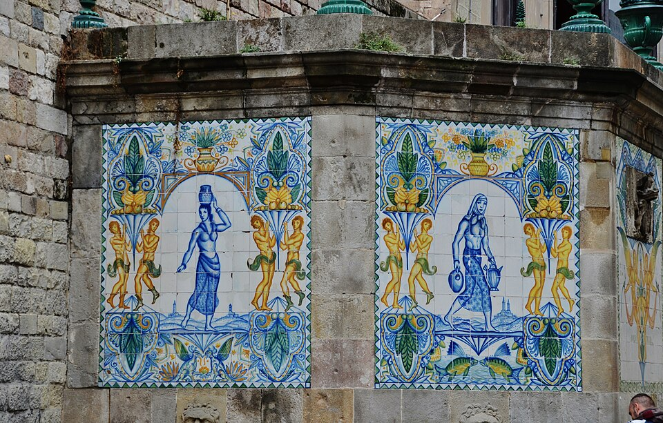

Seguid el sendero de mis palabras para encontrar el camino...
"Desde el lugar en el que empieza tu andadura, debes pasar a través de la fuente de los más inocentes con sus cestas y continuar por el sendero del Ángel."
"Casi al final del camino, cuando no sepas qué dirección tomar, deja a las mujeres que transportan ánforas a tu derecha."
"A Barcino, mi ciudad, su sangre en forma del líquido de la vida llega a través de sus venas hechas de piedra."
Allí, donde su arteria empieza y termina, escrito con ellas encontraréis mi última voz.